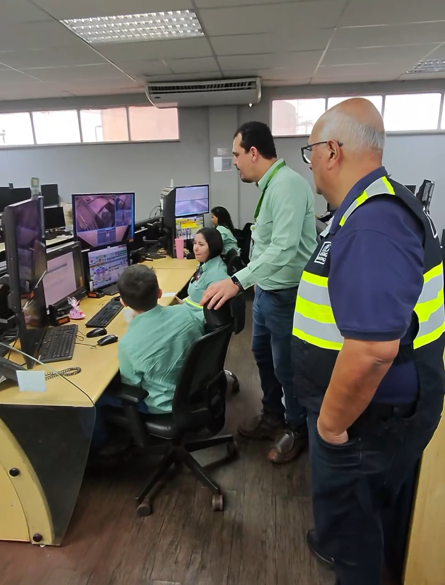

Coordenação para a segurança portuária
INTELIGÊNCIA
Papel coordenador
A Conportos atua como instância de articulação e coordenação: reúne múltiplas entidades para orientar e integrar as ações de segurança pública em portos, terminais e vias navegáveis.
Articula múltiplas entidades
Promove a atuação conjunta dos órgãos competentes em torno de objetivos comuns.
Padroniza diretrizes
Define orientações comuns de segurança aplicáveis ao setor aquaviário.
Fomenta a integração operacional
Aproxima planejamento e execução entre os entes envolvidos.
Entidades articuladas

Trilha Técnica da Fiscalização · SFC / GPF — ANTAQ
54 / 61